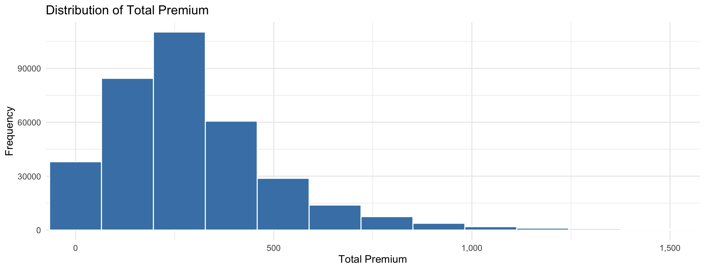
Visual Analytics for Motor Insurance Portfolio Discovery
2026-05-23
Financial Variable - Total Premium
Financial Variable - Incurred Losses, Claim Severity
Customer Demographics - Driver Age and Experience
Customer Demographics - Driver Bonus Score
Vehicle Characteristics - Value and Age
Portfolio Composition - Policy Type, Claim Occurrence
Correlation Matrix
Net Profit by Driver Age and Experience
Net Profit by Policy Type
Claim Frequency and Severity by Vehicle Age
Claim Frequency and Severity by Driving Experience
Profitability and Claim Trend
Conclusion

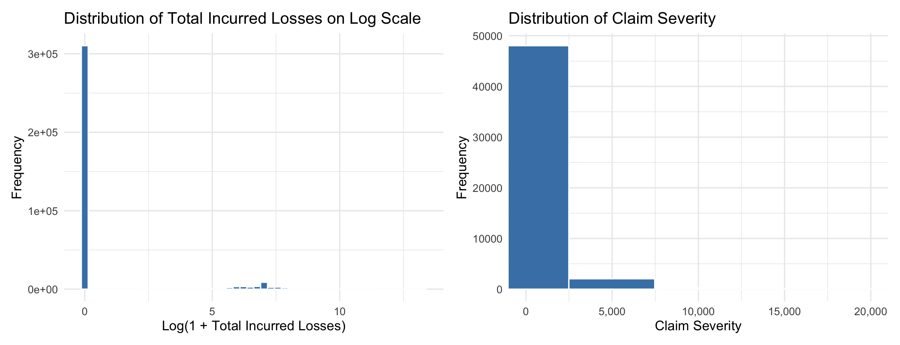
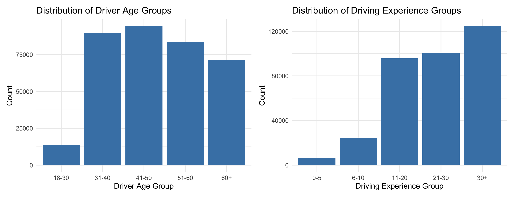
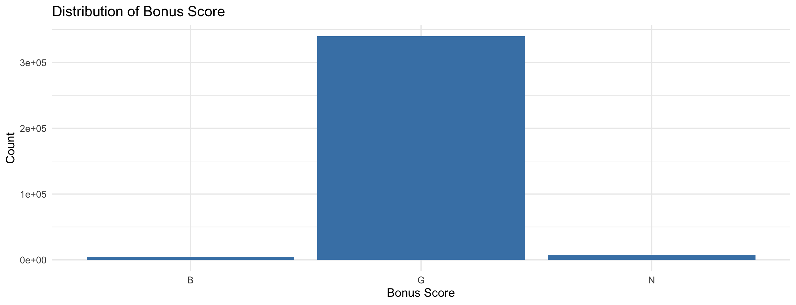
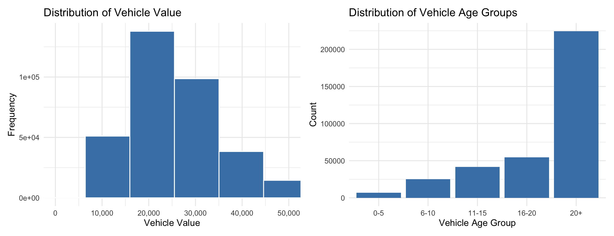
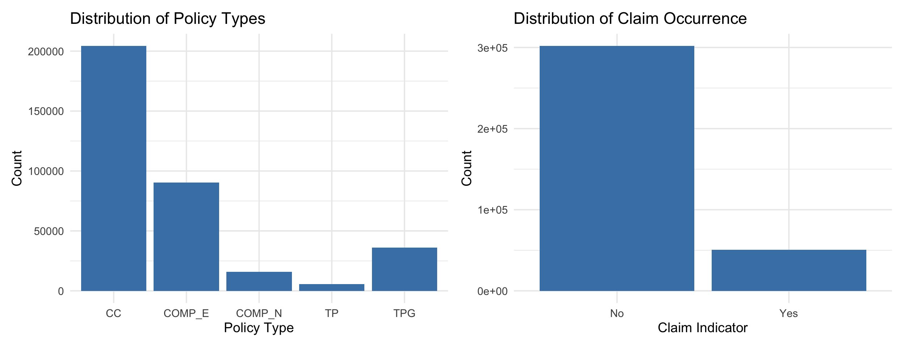
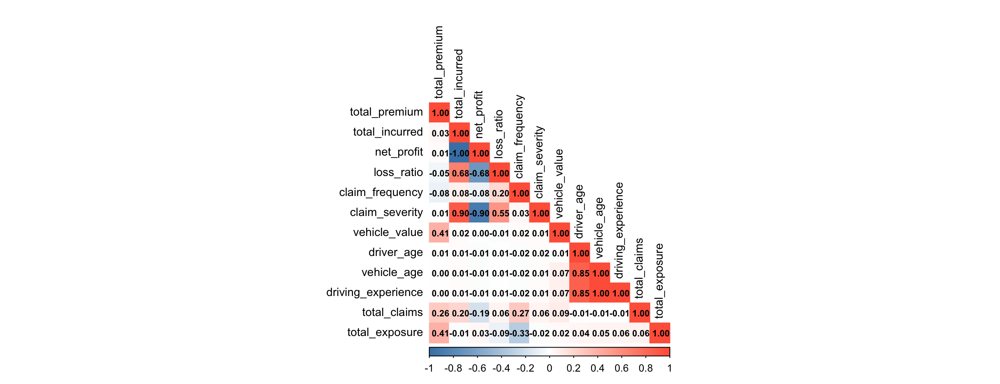
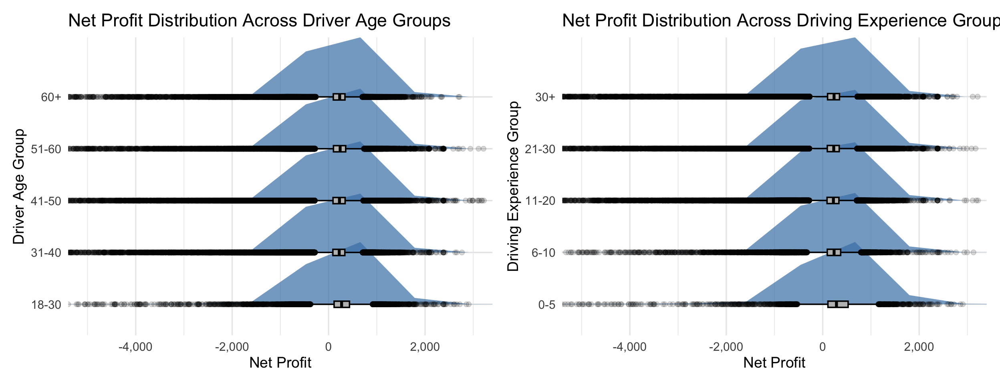
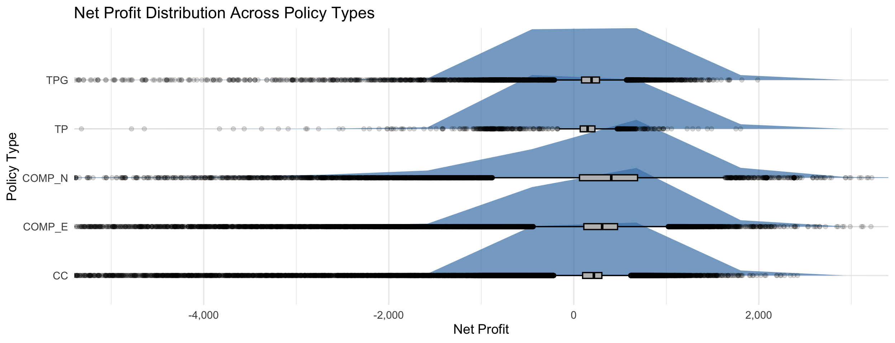
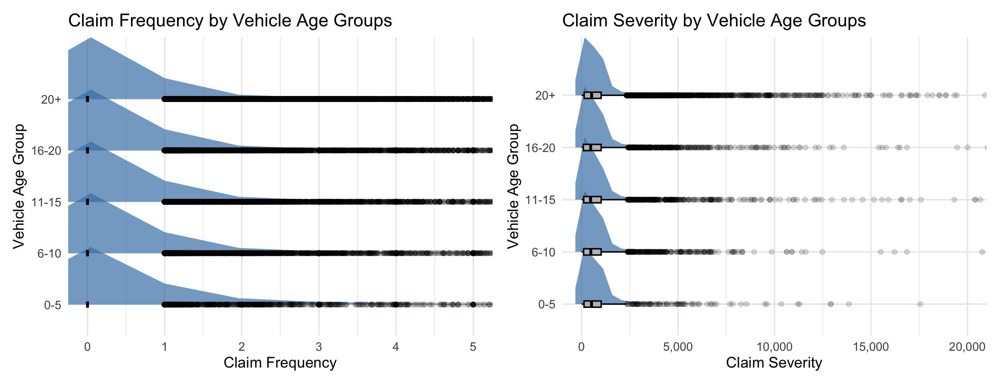
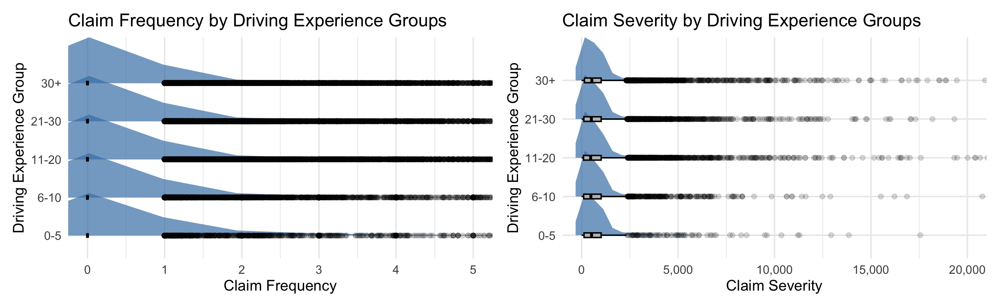
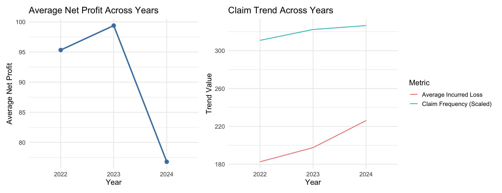
claim frequency and incurred losses increased steadily from 2022 to 2024
average profitability declined sharply in 2024.
Visual Analytics for Motor Insurance Portfolio Discovery